Science-based Relationship Support
あなたの「もう一度」を、
心理学とデータで
誠実に支える。
復縁屋さんは、心理学・行動科学の知見と6,000件以上のご相談データをもとに、復縁とあなたの自己成長に伴走する専門サービスです。
根拠のない断定や、無理な勧誘は一切いたしません。

※グループ会社連結での累計ご相談件数
Our Framework
感情論に頼らない、
3つの専門フレームワーク
「なんとなくのアドバイス」ではなく、学術的な知見と過去の実例データを土台に、お一人おひとりの状況を構造的に整理してご提案します。
01
感情と愛着の心理学
愛着理論をはじめとする関係心理学の知見を参考に、別れに至った背景と、おふたりの関係性の構造を丁寧に読み解きます。
02
行動変容のロジック
思いつきの連絡や場当たり的な行動ではなく、行動科学に基づいた小さな積み重ねを設計し、無理のないペースで関係の再構築を目指します。
03
データに基づく状況分析
6,000件以上のご相談データから、状況の近い実例を参照。いま何をすべきか・すべきでないかを、客観的な判断材料とともにお伝えします。
※学術知見・実例データはご提案の参考とするものであり、結果を保証するものではありません。
Our Services
サービス一覧
状況やご希望に合わせて、必要なサポートだけをお選びいただけます。どのサービスも入口は無料相談からです。
復縁コンサルティング
状況分析から行動計画づくり、日々のご相談まで。復縁を目指す道のりに、専門カウンセラーが継続的に伴走します。
恋愛・関係修復アドバイス
連絡の再開、会う約束、関係の深め方。場面ごとの迷いに対して、根拠のある選択肢を一緒に整理します。
心のカウンセリング
別れの直後の混乱や不安を、まず落ち着いて受け止めるための時間。傾聴を軸に、心の整理をお手伝いします。
状況分析・戦略立案
いま動くべきか、待つべきか。お相手との現在の関係性を客観的に分析し、判断材料と今後の進め方をご提案します。
Free Diagnosis
まずは、あなたの
「復縁タイプ」を知る。
12問の質問に答えるだけで、あなたとお相手の関係性の傾向を16タイプに分類。心理学の枠組みをもとに、いま取るべき関わり方のヒントをお伝えします。会員登録も費用も不要です。
※診断結果は関係性を理解するための参考であり、結果を保証するものではありません。
Reconciliation Type — 全16タイプ
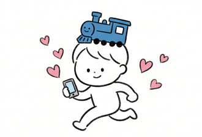
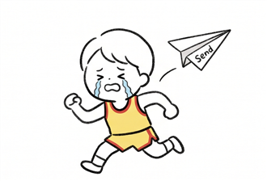
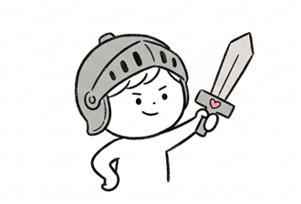
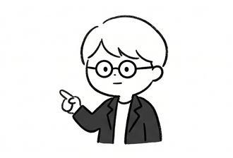
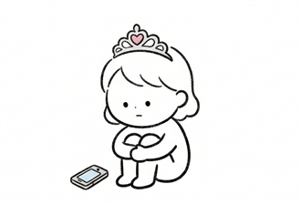
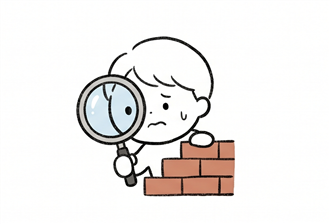
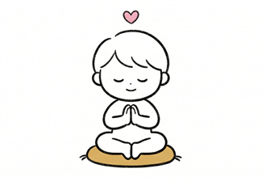
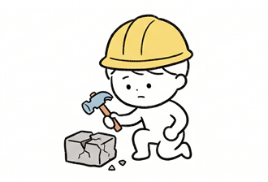
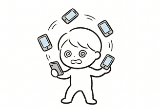
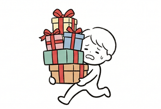
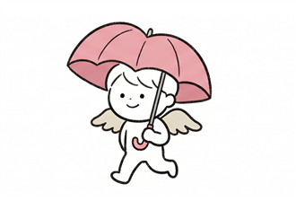
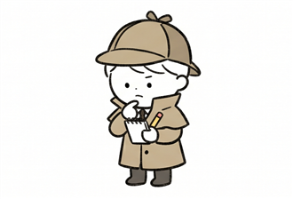
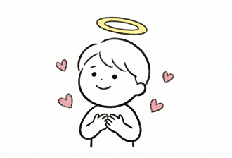
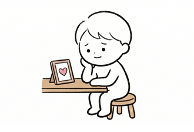
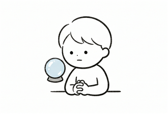
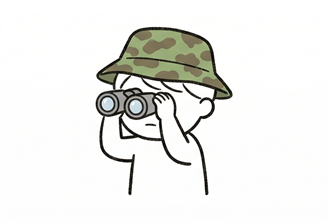
あなたはどのタイプ？ 12問の無料診断で確かめる
Why Choose Us
選ばれる3つの理由
誠実な見立て ── 難しいときは、難しいと言う
無料相談の段階で状況を丁寧に伺い、見込みが極めて低いと判断した場合は、その旨を正直にお伝えします。期待だけを持たせてご契約いただくことはありません。
明朗会計 ── 月々6,300円からの分割に対応
費用はご契約前にすべて提示し、ご説明のない追加請求はいたしません。月々6,300円〜の自社分割にも対応しており、無理のない範囲で始めていただけます。
秘密厳守 ── 探偵業法に基づく適正な運営
探偵業届出（第30210334号）に基づき適正に運営しています。ご相談内容の秘密保持を徹底し、初回のご相談は匿名でも承ります。
Expertise
専門領域とサポート体制
ひとつのご相談を、複数の専門的な視点から検討する体制を整えています。
恋愛心理
カウンセリング
傾聴を軸に、感情の整理と関係性の理解を支える、ご相談の中心となる領域です。
行動科学・
コミュニケーション
連絡や対話の進め方を、行動科学の観点から無理のない形で設計します。
データ分析・
ケース研究
6,000件以上のご相談データを整理し、状況の近い実例をご提案の参考にします。
法令遵守・
品質管理
探偵業法をはじめとする関連法令を遵守し、公序良俗に反するご依頼はお受けしません。
Pricing
料金体系
費用はご契約前にすべてご提示します。ご説明のない追加請求はいたしません。
復縁サポート
Support Program
- 状況分析と行動計画のご提案
- 専任カウンセラーが継続伴走
- 自社分割払いに対応
- 総額・内訳はご契約前に提示
※料金はご状況・サポート内容・期間により異なります。分割払いの場合、頭金として一部料金をお支払いいただく場合があります。詳細は無料相談の際に必ず書面でご確認いただけます。
Process
ご相談の流れ
Step01
無料相談
フォームまたはお電話でご連絡ください。匿名でも構いません。まずはお話をゆっくり伺います。
Step02
状況の整理・分析
別れの経緯や現在の関係性を、心理学の知見と過去の実例データに照らして整理します。
Step03
ご提案・お見積り
進め方の選択肢と費用の総額・内訳をご提示します。その場でのご契約は不要です。
Step04
サポート開始
ご納得いただけた場合のみ開始。専任カウンセラーが計画に沿って継続的に伴走します。
Voices
ご相談者の声
感情的になっていた自分を、一度落ち着かせてもらえました。
別れた直後で、すぐに連絡したい気持ちでいっぱいでした。相談の中で「いま動かない」という選択肢を初めて理由付きで説明してもらい、焦らず段階を踏めたことが良かったと感じています。
※個人の感想です。同様の結果を保証するものではありません。
何をすべきか・すべきでないかが明確で、迷いが減りました。
毎回の相談で「次に何をするか」を一緒に決めてもらえたので、一人で抱え込んでいた頃より気持ちがずっと楽になりました。費用も最初に総額を提示してもらえたので、安心して続けられました。
※個人の感想です。同様の結果を保証するものではありません。
Explore
あなたに近いケースから探す
性別・地域・状況・お相手のタイプ別に、ご相談事例と読み物をまとめています。似た状況のページから、進め方の参考にご覧ください。
復縁のご相談事例
実際のご相談がどう進んだのか。状況別・タイプ別に18件の事例を紹介しています。
事例一覧を見る →状況・場面から探す
突然の別れ、浮気、遠距離、喧嘩別れ、倦怠期など、別れの場面ごとに整理しています。
場面別に見る →お住まいの地域から探す
東京・大阪・名古屋・福岡など、全国12エリアのご相談に対応しています。
地域別に見る →お相手のタイプから探す
多忙・プライドが高い・冷めやすい・繊細など、相手のタイプごとの向き合い方を解説します。
タイプ別に見る →性別・年代から探す
女性・男性・50代以上など、ご相談者ごとに起きやすいお悩みを整理しています。
相談者別に見る →復縁・恋愛心理コラム
冷却期間、最初の連絡、愛着理論など、心理学をふまえた読み物を掲載しています。
コラムを読む →FAQ
よくあるご質問
相談だけでも大丈夫でしょうか？
もちろんです。ご相談だけでお悩みが整理され、解決に向かうケースもございます。無理な勧誘は一切いたしませんので、お気軽にご連絡ください。
必ず復縁できますか？
結果をお約束することはできません。ご状況により見通しは大きく異なります。そのため無料相談の段階で丁寧に状況を伺い、見込みが極めて低い場合は正直にその旨をお伝えしています。
全国どこでも対応してもらえますか？
はい、全国対応です。各地域の事情に通じたスタッフがおりますので、地方にお住まいの方や、お相手が遠方にいらっしゃる場合もご相談ください。
オンラインでの相談も可能ですか？
はい、ZoomやLINE通話などを利用したオンライン相談を無料で承っております。「まずは気軽に話を聞いてほしい」という段階でもご利用いただけます。
サポートの期間はどのくらいかかりますか？
ご状況によりますが、平均的には2〜4ヶ月程度の期間をいただくケースが多くなっています。お相手との関係性に合わせ、無理のないペースで進めます。
匿名で相談することはできますか？
はい、初回の無料相談はニックネームなど匿名で構いません。ご契約時にはご本人確認が必要となりますが、秘密保持は徹底しております。
違法な調査などをお願いされることはありませんか？
当社は探偵業法に基づき適正に運営しており、法令や公序良俗に反する行為は一切お受けしておりません。安心してご相談ください。
Free Consultation
ひとりで抱え込む前に、
まずは状況の整理から始めませんか。
ご相談は無料・秘密厳守。匿名でも構いません。お話を伺ったうえで、誠実な見立てをお伝えします。
受付 24時間 ／ お電話に出られない場合は、カウンセラー選定のうえ折り返しいたします
Company
会社情報
- サービス名
- 復縁屋さん
- 商号
- 株式会社Azucar
- 法人番号
- 7011601025568
- 所在地
- 〒176-0025 東京都練馬区中村南2丁目21番15号
- 連絡先
- 0120-972-119
- 資本金
- 5,000,000円
- 探偵業届出
- 第30210334号